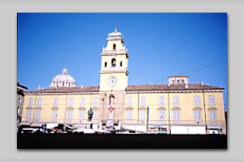
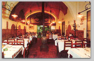
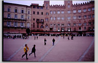
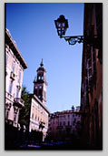
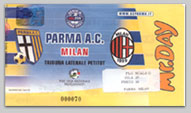
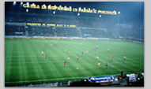
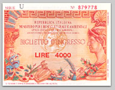

|

|
|
ちょうど１年ぶりにイタリアへ行ってきました。今月と来月の２回にわたって、イタリア旅行記をおおくりします。えっ？ 他人の旅行話なんて聞いても腹立たしいだけでおもしろくないって？ まあ、そういわずにおつきあいください。 |
|
|

「ビステッカ・アッラ・フィオレンティーナ」が名物のレストラン。 |

シエナの中心「カンポ広場」 |
| ３０日月曜日、シエナに日帰りで行く。フィレンツェから直通バスで１時間半ほどのところにある小さな中世の街だ。街の中心にある貝殻の形をしたカンポ広場は、「世界一美しい広場」ともいわれている。 この街、そしてこの広場のファンはとても多い。本当に美しい場所だと思う。あたたかな日はのんびりと広場に腰をおろしていると、ただそれだけで気持ちがいい。 そんな美しい街なのだが、どうも私にはいい印象があまりない。以前、事情があって１０日間ほど滞在したことがあるが、そのときに受けたセネーゼ（シエナっ子）たちからの差別の数々がわすれられず、とても暗ーいイメージがある。 では、なんでそんな街にふたたび行くのかと、お思いでしょう。本当にそんなイヤなところだったかどうか確認に行ってみたかったのだ。 では、行ってみてどうか。短時間の滞在だったのではっきりしたことはわからないが、ひとつだけいえることは、もう当分行くことはないだろう。 フィレンツェならびにトスカーナ地方ファンのみなさん、気分を害したことでしょう。もうしわけありません。もうしばらくは、足をむけないようにしますので、どうかお許しください。 明日は、いよいよ第一の目的の地であり、大好きなエミリア・ロマーニャ州のパルマだ。ほっ。 ■パルマの虜 ３１日火曜日。朝早くフィレンツェを脱出。９時１３分の電車でパルマにむかう。 パルマとはスタンダールの『パルムの僧院』の舞台パルムのこと。そのほかパルメザン・チーズ（パルミジャーノ）、生ハム（プロシュート）の産地としても有名だ。 パルマに行く目的は、翌１１月１日に行われるパルマA.C対A.Cミランのサッカーの観戦、とくにもっとも好きな、イタリア代表にはなくてはならないディフェンダー、ファビオ・カンナヴァーロのプレーを見るためだ。昨年の得点王、ミランのフォワード、シェフチェンコをいかに抑えるのか楽しみだ。それにミランにも旬は過ぎたとはいえ、イタリア代表として歴代トップのキャップ数を更新中のキャプテン、パオロ・マルディーニやデメトリオ・アルベルティーニの凄腕ベテランもいる。興味はつきないところだ。 ミラノのサン・シーロやローマのスタディオ・オリンピコなら８万人以上収容できるので、ほとんどの場合当日券で大丈夫なのだが、パルマのスタディオ・エンニオ・タルディーニは２万９０００人しか収容できないし、相手が人気チームのミランなので、前売券を買うため前日にパルマ入りすることにした。 パルマに着くとあいにくの雨。チケットの販売は午後３時からとのことなので、街になれるためしばらく散歩をしていると雨がどんどんひどくなっていく。時計を見ると、もうそろそろ昼食の時間なので、一軒の書店に入り、パルマのガイドブックを立ち読みしてレストランを選ぶ。 ガイドブックに記載されている住所をたよりに行ってみると、ドゥオモ広場の脇に小さいがなかなか高級そうなレストランがある。なかに入ると、高級そうではなく、高級なレストランだということがわかった。来ている客層はみんなあきらかにお金持ち風だ。 メニューをみると伝統的なパルマ料理がならんでいる。季節柄、白トリュフのタリオリーニ（パスタの種類のひとつ）があるが、時価と書かれている。値段を聞くのも気がひけたので、プリモには名物のカボチャのトルテッリ（パスタの種類のひとつ）、セコンドには牛フィレ肉と生ポルチーニを焼いて、赤ワインのソースをかけたものをとる。 パルマの料理らしく、すこし重めではあるがどれもおいしい。それに給仕する人たちのサービスが完璧だ。静かで、でしゃばらないし、気がきく。身のこなしはしなやかで迅速だ。レストラン全体の雰囲気が料理の味も引き上げている。これに地の赤ワインを飲んで、代金は３０００円ほど。また行きたい店だ。 夕方、運よく雨もあがったのでスタジアムまでチケットを買いにいく。スタジアムは街の中心から歩いて１５分ほどのところにある。 窓口にならぶと、ひとりの若い男が、 「チケットを買うの？」 と話しかけてくる。ダフ屋か何かかなと思い、ほおっておくと、 「明日用事ができて行けなくなったのでチケットを買ってくれないか」 と再度話しかけてくる。困った顔をしていると、真意がわかったらしく、自分でチケット売り場の窓口の女性に、事情を話している。するとチケット売り場の女性も、 「もし、お望みの席と同じだったら買ってあげてください」 という。どうやら、偽チケットでもダフ屋でもないらしい。それでは、ということでそのチケットを購入することにした。それにしてもチケット売り場の人から頼まれるなんて、なんとも大らかな話だ。 別れ際何度も何度もていねいにお礼をするのを聞いて、疑って悪かったかなとすこしだけ思った。 |
|
|

パルマの街の中心部 |

パルマ対ミランの入場券。 14万リラ（約7000円） |
| １１月１日水曜日。この日はイタリアでは「諸聖人の日」（トゥッティ・サンティ）という祝日。きのうとはうってかわっての大晴天。雲ひとつない青空が広がっている。 まずは、街の中心にあるドゥオーモ、洗礼堂、ファルネーゼ劇場などを見てまわる。前から歩いてくるパルマっ子たちが、「今日は、シェフチェンコを抑えることができるかな」などと、夜８時３０分から行われるサッカーの試合の話に早くも華をさかせている。 パルマには５年前に一度訪れたことはあるのだが、そのときはボローニャからの日帰りだったので、あまりのんびりすることができなかった。 今回ゆっくりと滞在してみると、いやー本当にいい街です。落ち着いていて、危険な感じはいっさいしないし、人々は親切だし、食べ物はおいしいし、いいサッカーチームを持っているし、いいことずくめ。引っ越してきたいくらいだ。 街内見物の後、きのうとは別のレストランを選び、２時間以上かけてゆっくりと昼食。午後は、夜のサッカー観戦にそなえて、一度ホテルにもどってシエスタ（昼寝）。ワインもまわって、ぐっすりと眠る。 夜７時３０分、スタジアムへむかう。スタジアムのまわりはもう人でいっぱいだ。ローマでもミラノでもロンドンでもマドリッドでも、スタジアム付近は、ダフ屋や警官やスリや熱狂的なサポーターであふれかえっていて、うさん臭く、危険なにおいがするものだが、ここパルマのエンニオ・タルディーニにはそういった雰囲気がいっさいない。入口の荷物検査やボディチェックなどもない。 席につくと、驚いたことに、パルマのサポーター席にもかなりミランのサポーターがいる。こんなことは、ミラノやローマ、フィレンツェのスタジアムでは考えられないことだ。去年、ミラノのサン・シーロへインテル対ラツィオの試合を見にいったとき、別のチームのサポーターが罵声をあびせられながら、追い出されるのを目のあたりにしている。それはそれは凄まじい勢いでたたきだされていた。それがここでは、平気でミランのマフラーを巻き、ミランの選手に声援を送っているのだ。 すぐ後ろの席から「ファビオー！」と、わがファビオ・カンナヴァーロに女性の声援が飛ぶ。後ろをふりむくと、とっても美型の女の子。おもわず目があうと、「あなたもファンなの」とばかりにニコッと笑顔をむけてくれる。ところがとなりに座っている彼女のボーイフレンドは、かなり熱狂的なミラン・ファンなのだ。これまでに経験したことがないほどのんびりとしたスタジアムだ。もちろんいいことだと思うけれど……。 ピッチの上ではパルマ、ミラン両チームとも試合前の練習をしている。ここエンニオ・タルディーニはサッカー専用スタジアムなので陸上トラックがなく、観客席からピッチまでの距離が近く、とても見やすい。 キャプテンのマルディーニを先頭に、きちんと統率のとれたミランの練習ぶりは、まさにエリート集団といった感じだ。それにくらべ、地元パルマは、なんだかみんなぷらぷらした感じで、まとまりがないように見える。このまとまりのなさは試合がはじまってもずっとつづく。 ミランの組織された守備や攻撃にくらべて、パルマは守備にしても、攻撃にしても、個人が個々の能力でバラバラに動いているように見える。守備ではカンナヴァーロとフランス代表のテュラム、イタリア代表のゴールキーパー、ブッフォンが中心となって、個人の力で守り抜く。攻撃もシドニーオリンピック金メダルの立役者、カメルーン代表のエムボマ（ガンバ大阪にいたあのエムボマです）の圧倒的な身体能力を中心に、やはり個々の力で攻める。 いまどきこんなサッカーで勝てるのかな、と思っていたが、結果はエムボマがあげたふたつのゴールを、タイトなディフェンスで守りきり、勝利をあげた。シェフチェンコをはじめ、ミランの攻撃陣は完璧におさえこまれた。 テレビで見ているとなかなかディフェンダーの動き方というのはわかりにくいものだが、じっさい見てみると、チームによっても、また個人によっても違いがあっておもしろい。誰が何といおうと（たとえばヨハン・クライフ）、やはりイタリアの美しいディフェンスを見るのは至上の喜びだ。 試合が終わると１０時半を過ぎている。夜のパルマの街を散歩しながらホテルへもどる。また、ぜひこの街にサッカーの試合を見にきたいものだ。 |
|
|

パルマのスタディオ・エンニオ・タルディーニ |

ファルネーゼ劇場の入場券。 4000リラ（約200円） |